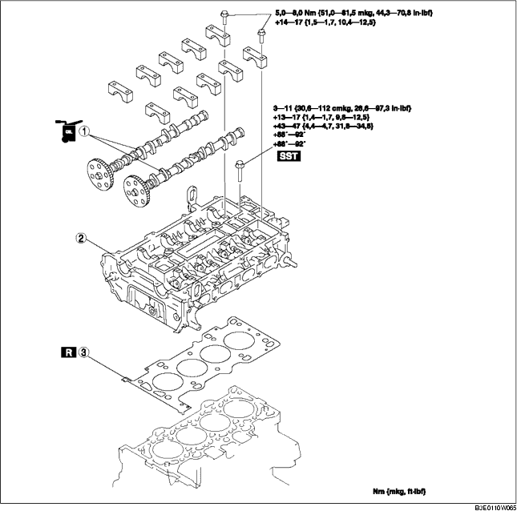

1. Die Steuerkette ausbauen. (Siehe STEUERKETTE AUSBAUEN/EINBAUEN [LF].)
2. Die Zündspule ausbauen. (Siehe ZÜNDSPULE AUSBAUEN/EINBAUEN [LF].)
3. Den Ansaugkrümmer ausbauen. (Siehe LUFTANSAUGSYSTEM AUSBAUEN/EINBAUEN [LF].)
4. Folgende Teile lösen.
5. Um den Motor sicher abzustützen, zuerst den Motorheber mit Adapter an der Ölwanne ansetzen.
6. Gemäß der Reihenfolge in der Tabelle ausbauen.
7. Der Einbau erfolgt in umgekehrter Reihenfolge.
8. Die Kompression prüfen. (Siehe KOMPRESSION PRÜFEN [LF].).)

.
|
1
|
Nockenwelle
(Siehe Ausbauhinweis für Nockenwelle.)
(Siehe Einbauhinweis für Nockenwelle.)
|
|
2
|
Zylinderkopf
(Siehe Ausbauhinweis für Zylinderkopf.)
(Siehe Einbauhinweis für Zylinderkopf.)
|
|
3
|
Zylinderkopfdichtung
|
1. Die Befestigungsschrauben des Nockenwellen-Lagerdeckels in der abgebildeten Reihenfolge in 2-3 Schritten lösen.
1. Die Befestigungsschrauben des Zylinderkopfes in der abgebildeten Reihenfolge in 2-3 Schritten lösen.
1. Die Länge der Zylinderkopfschrauben messen.
2. Die Befestigungsschrauben für den Zylinderkopf in der abgebildeten Reihenfolge in den 5 folgenden Schritten mit Hilfe des SST (49 D032 316) festziehen.
1. Den Nocken für Zylinder Nr. 1 auf OT-Position stellen und die Nockenwelle einbauen.
2. Die Nockenwellen-Lagerdeckel gleichmäßig in 2-3 Schritten provisorisch festziehen.
3. Die Schrauben der Nockenwellen-Lagerdeckel in der gezeigten Reihenfolge in den folgenden zwei Schritten festziehen.